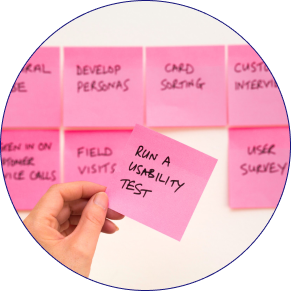
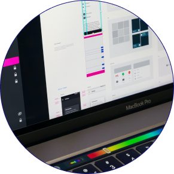
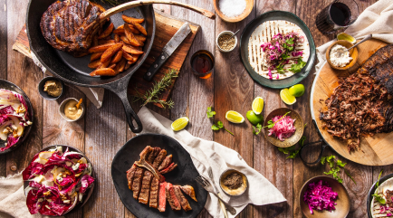
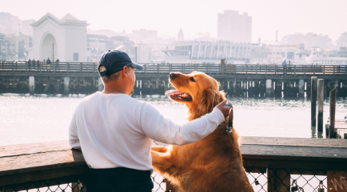

My name is Aaron Alemseged and welcome to my portfolio! I am an aspiring UX/UI Designer. I have experience in all areas of UX and UI but my skills shine in the Research and Define phase. Over the course of my academic and professional career, I have gained experience in empathy and research tactics, as well as understanding pain points.
UX Skills

User Research
As a user researcher, I am proficient at user interviewes, affinity diagrams, user personas. My drawing skills are a bit lacking, so my story boards are mainly stickfigures. I’m not afraid of my weaknesses.

Interface Design
I started off by learning Figma, but over time I have gained experience in Sketch, Adobe XD and interaction designing. I prefer Figma as my pain prototyping tool, for now, but I plan on and willing to learn more!
Front End Development
I have some experience in Front-End Development. I have spent time learning HTML, CSS, Javascript (JQuery and Bootstrap).
My Work
JustGO
JustGo was an individual project I had worked on. The concept behind it was to have one Mobile Application that consolidates travel information, for a seamless experience. Of course, the integrated information would then create a customized itinerary.

What's for Dinner
What’s for Dinner was a project I had worked on with some fellow UX Designers. The mobile application was inspired by the idea that individuals who don’t have much time to cook, would be able to input their food items (pantry, refrigerator, freezer, etc.) through barcode, manual or quick entry, and have custom and quick curated meals.

Canines for Disabled Kids
Canines for Disabled Kids was another group project I worked on. It was a Non-Profit Redesign in which, researched pain-points and areas of improvement, would be re-developed so that users could have an easy experience.